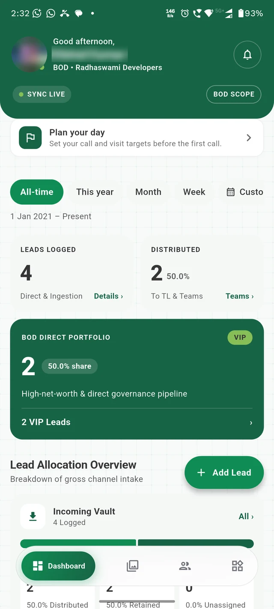
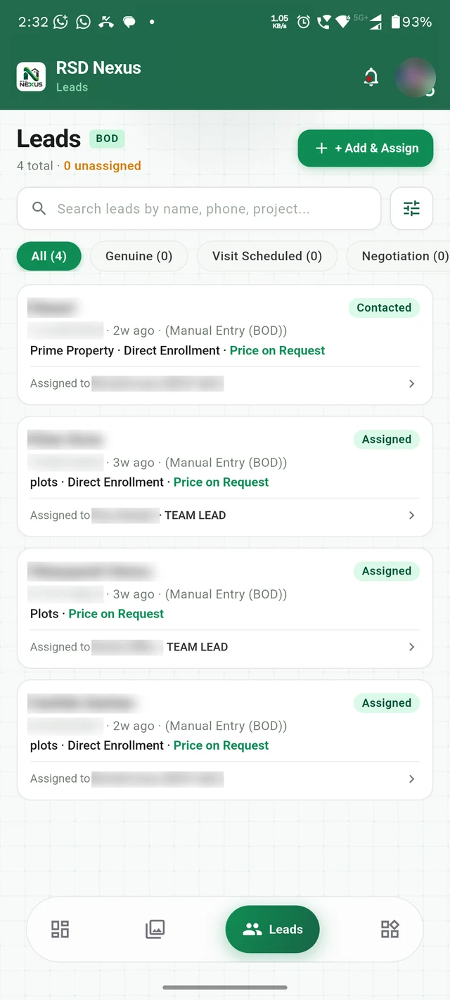
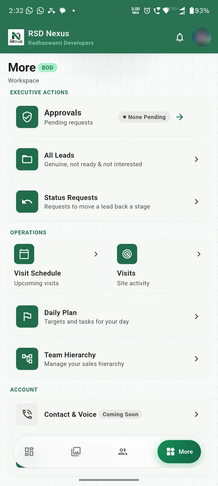
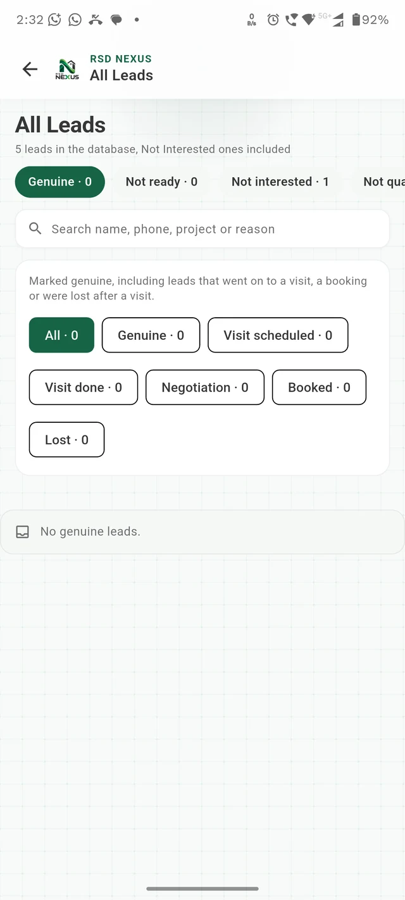
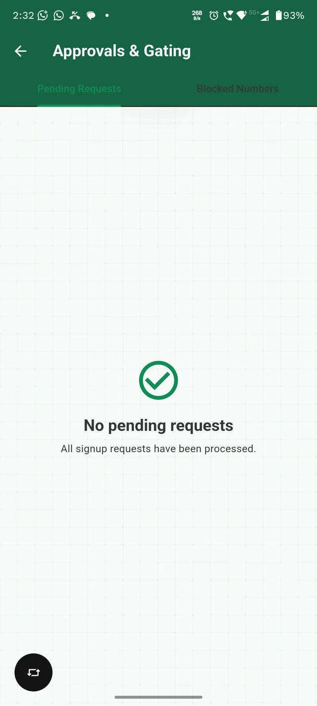
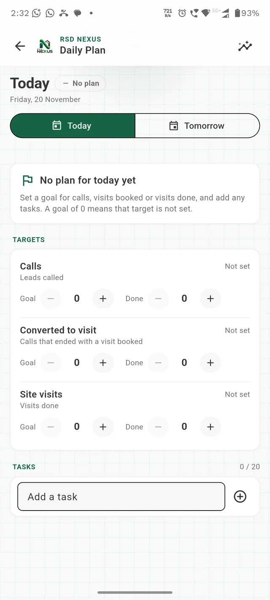
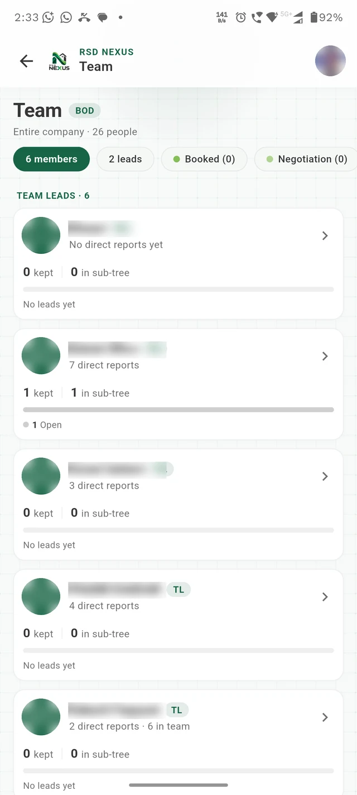
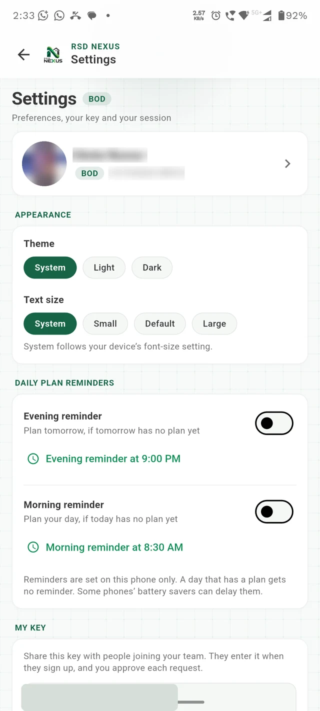
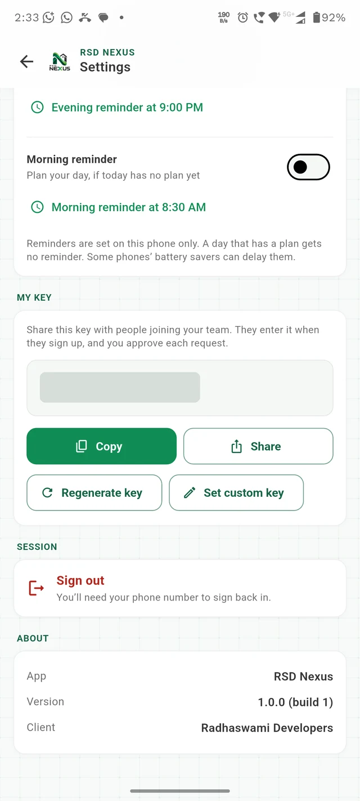

RSD Nexus, built for Radhaswami Developers, takes a Meta Ads lead from spreadsheet to booked site visit. It assigns leads down a sales hierarchy, guides each one through a strict pipeline and keeps every decision auditable.


Every screen follows the same four-tab layout for every role: Dashboard, Gallery, Leads, More. What each user sees depends on where they sit in the hierarchy.
Bulk upload from Excel/CSV or add a single lead. Duplicates are detected by phone number and flagged for review instead of silently dropped.
Leads flow down the chain, and everyone sees their own leads plus their whole reporting sub-tree. The full assignment trail is tracked.
New joiners sign up with their manager's key and phone OTP, then wait for an approval gate before they get access.
New to Booked, one step at a time, with a note at key stages. Every change is written to an append-only status log.
Schedule visits, get a reminder the day before, and attach visit photos to a company-wide searchable gallery.
Each user sets call, visit-conversion and site-visit targets plus a task checklist, with optional morning and evening reminders.
BOD gets an All Leads register, a rollback approval queue and a team view with per-branch lead counts.
Soft-deleted leads keep an audit trail, backwards status moves need approval, and security rules back up the client checks.
A tree of roles, and a lead lifecycle that can't skip steps.
Leads that aren't ready go back to follow-up with a 3- or 6-month reminder. Leads that aren't interested are soft-deleted but kept for reporting.
Taken from the BOD (director) account on a test dataset. Names, phone numbers, photos and sign-up keys are blurred.







One Flutter codebase on a serverless Firebase backend.
The brand palette: Charcoal #363636, Deep Forest #176445, Emerald #108D54, Leaf #86BE57. It follows a 60/30/10 split and passes WCAG contrast checks, in both light and dark themes.